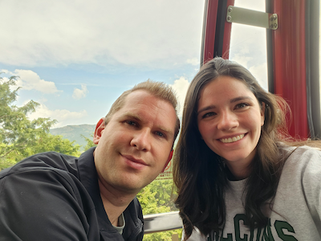

About Me !
Hello ! My name is Emily Larson. I was born and raised in Northern Utah and currently live there with my husband. I have been a high school physics teacher for the last four years. I love learning new skills like painting, cross-stitch, and video games.

How I Met My Husband
I met my husband Trevor the old fashioned way, through a dating app. We had both gotten onto it due to COVID and going a little stir-crazy stuck indoors. We met outdoors at a park and had a picnic while chatting for several hours. We found out that we both had weekly dnd games going. From there we dated and played a dnd campaign together. Our characters got married the day before we did !
